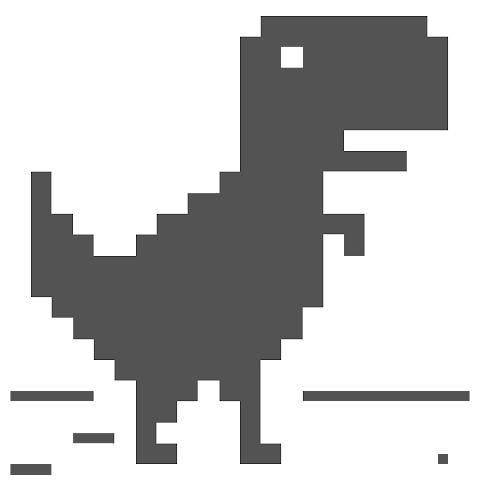

Drücke den Knopf um die Website auf den Startbildschirm deines Handys hinzuzufügen.
Hier habe ich gelernt, wie das gemacht wird:
https://developer.mozilla.org/en-US/docs/Web/Progressive_web_apps/Add_to_home_screen
Das funktioniert aber leider nicht auf IOS Geräten.
